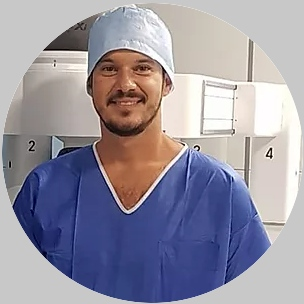

Responsável Técnico

Dr. Diego Perdigão
Uro-Oncologia · Cirurgia Robótica
Residência em urologia no Hospital Federal de Ipanema, com formação em cirurgia robótica na Clinique Saint Augustin (Bordeaux, França) e em cirurgia minimamente invasiva na Rede D'Or. Dedicado ao tratamento dos cânceres urológicos.
CRM-RJ 52 934895 · RQE 32110
Agendar no Doctoralia